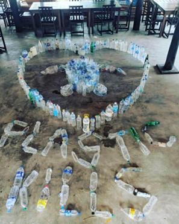

THREATS TO TURTLES
A GRAVE SITUATION WE MUST ADDRESS
Sri Lanka is home to a wide range of species and has an outstanding
biodiversity throughout its many eco-systems. Marine turtles are among
these animals that are highly valued since they are rare, old reptiles
that have lived on the planet for more than 100 million years and have
developed to the point where they have no natural enemies in the animal
kingdom and are an essential component of marine eco-systems. However,
due exclusively to human activity, sea turtles have decreased by 80% in
the previous 100 years, making them one of the most endangered animals
in the world.
PLASTIC POLLUTION
Due to increasing pollution in Sri Lanka, where garbage is being thrown
into the ocean, the health and existence of sea turtles and other marine
species are under jeopardy. Numerous marine animals, including sea
turtles, perish each year as a result of ocean pollution and marine debris
consumption.

CONSIQUENCES
Each year, more than 300 million tonnes of plastic are manufactured,
of which 10 million tonnes end up in the ocean. Plastic can also
immediately sink to the ocean floor, become caught in underwater
avalanches, and mix with silt that is descending into canyons beneath
the sea. It does not always float on the top. In locations where
marine life is abundant, plastic that penetrates deep into the ocean
may become buried in the sediments that make up the bottom.
PREVENTIONS
-
Reduce. Every plastic item you choose not to purchase reduces the
amount of plastic that may end up in the ocean. You can encourage
businesses all across the world to use less plastic packaging if
you stop purchasing plastic.
-
Don't use single-use plastics. Use a reusable shopping bag rather
than a plastic one, and choose a paper or reusable straw over a
plastic one. Be wary of items with concealed plastics, such as tea
bags, chewing gum, wet wipes, and "paper" cups for takeout coffee.
Paper cups used for takeout frequently include plastic linings.
-
Don't use microplastic. Microplastics are plastic fragments with a
length of less than 5 mm. Microplastics have been discovered
everywhere, from the Mariana trench's lowest point to within both
people and animals.
-
Recycle. Despite the potential for harm, plastic is nonetheless an
important resource. Sort your trash instead and send your
recyclable plastic to a new life because it is not biodegradable.
It is being reused in this way, which deters the manufacturing of
more.
POACHERS
Turtles and their eggs have been under growing threat from poachers over
time, especially during the epidemic when unemployment was rampant.
Because it allowed individuals to make money from the eggs, poaching
increased. These eggs are acquired from poachers and kept in Sri Lankan
turtle hatcheries until the turtles hatch. To get turtles' shells or other
body parts, they may mistreat or harm them, and they illegally gather
turtle eggs. This might be sold later on the illicit market.
CONSIQUENCES
Poachers pose a serious danger to turtles and their eggs through a
variety of actions.
-
They acquire turtle eggs and extort an enormous profit from them.
Additionally, poachers illegally import turtle eggs or sell them.
-
They ruthlessly collect turtle eggs, causing the turtles die as a
result.
PREVENTIONS
-
Governments may enforce laws and regulations to save turtles and
penalize poachers.
-
Reducing demand for turtle goods can be accomplished by raising
public knowledge of the value of turtles and the risks associated
with turtle poaching.
-
Conservation of habitats - By making it harder for poachers to
obtain turtles, protecting turtle habitats can aid in the fight
against poaching.
-
Patrols and surveillance - Consistent patrols and surveillance of
turtle nesting areas and migratory paths can assist to thwart
poachers and maintain the safety of the turtles.
-
Alternate sources of income - Offering communities who depend on
turtle poaching alternate sources of income might lessen the
incentive to kill turtles.
-
Collaboration with other nations and organizations can be
successful in the fight against turtle poaching on a worldwide
scale.
COASTAL DEVELOPMENT
Due to hotels and other structures being built over turtle hatcheries and
nesting locations along beaches, hatchlings and turtles have perished. The
coastal regions where sea turtles lay their eggs are threatened by coastal
developments because they introduce risks like artificial light and
pollution.

CONSIQUENCES
Depending on how it is planned and managed, coastal development may
have both beneficial and bad effects. The following are a few possible
harmful effects:
-
Habitat loss - Mangroves, wetlands, and other crucial coastal
habitats that are essential for many species may be destroyed as a
result of coastal development.
-
Erosion and sedimentation - Coastal development can change how
sediment and water naturally flow, which can cause erosion in
certain regions and sediment deposition in others.
-
Heightened susceptibility to natural disasters - Construction in
low-lying coastal locations might raise the danger of flooding and
storm damage.
-
pollutants: Coastal expansion may result in a rise in sewage,
agricultural, and other types of pollutants that are bad for both
human health and marine ecosystems.
-
Reduced water quality - Runoff, sewage, and other issues, as well as
coastal development, can all contribute to worse water quality.
-
Cultural heritage is at risk because coastal development might
result in the obliteration of key historical and archaeological
monuments.
PREVENTIONS
It's not always feasible or desirable to completely stop coastal
expansion, as there are numerous advantages, like the provision of
houses and work for people. To lessen the detrimental effects of
coastal development, however, there are a number of approaches that
may be taken:
-
Creating coastal management plans: These plans can help with
coastal development and show where it is not appropriate to build.
Plans for coastal management can also aid in balancing conflicting
interests including fishing, tourism, and environmental
preservation.
-
Critical habitat protection: Development should be prohibited in
areas that support coral reefs, wetlands, and mangroves. The
preservation of these ecosystems can help the local communities as
well as the environment and economy.
-
Zoning laws can be put in place to restrict development in regions
that are vulnerable to flooding, erosion, or other natural
disasters. This can aid in lowering the dangers to property and
human life.
-
Encouragement of sustainable development methods: Green building
methods, stormwater runoff reduction strategies, and the use of
renewable energy sources can all assist to reduce the negative
environmental effects of coastal development.
-
Taking climate change into account: Sea level rise and an increase
in storm activity are only two of the predicted ways that climate
change will impact coastal communities. Plans for coastal
development may take these effects into account to assist assure
long-term sustainability.